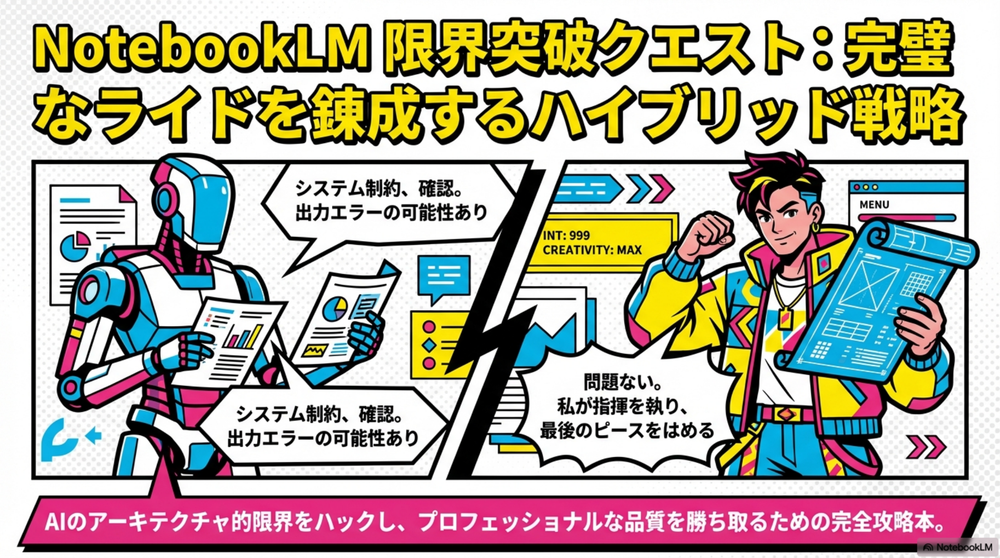
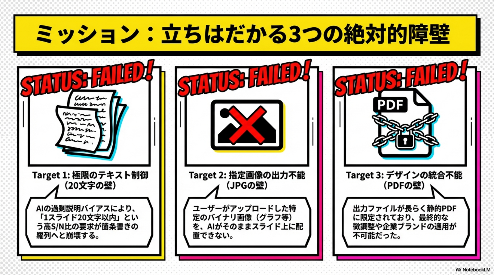
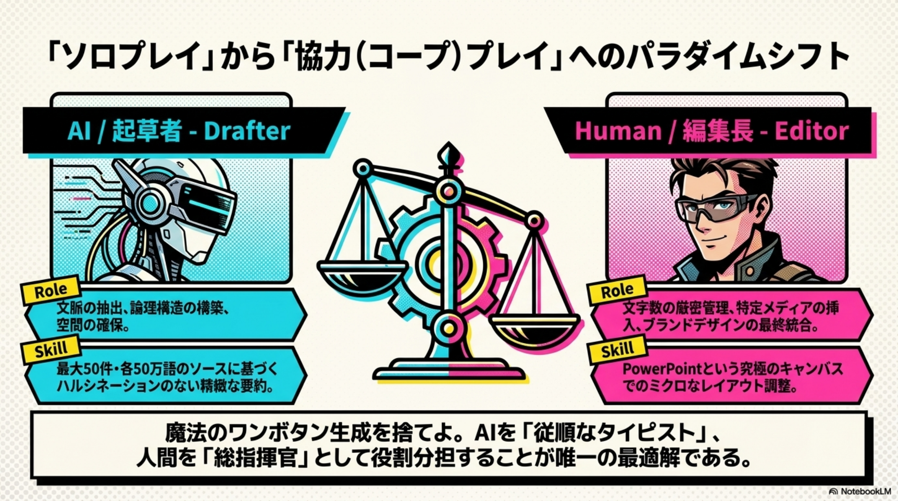
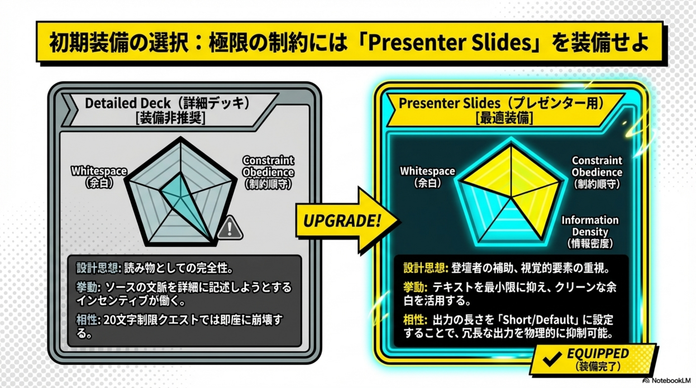
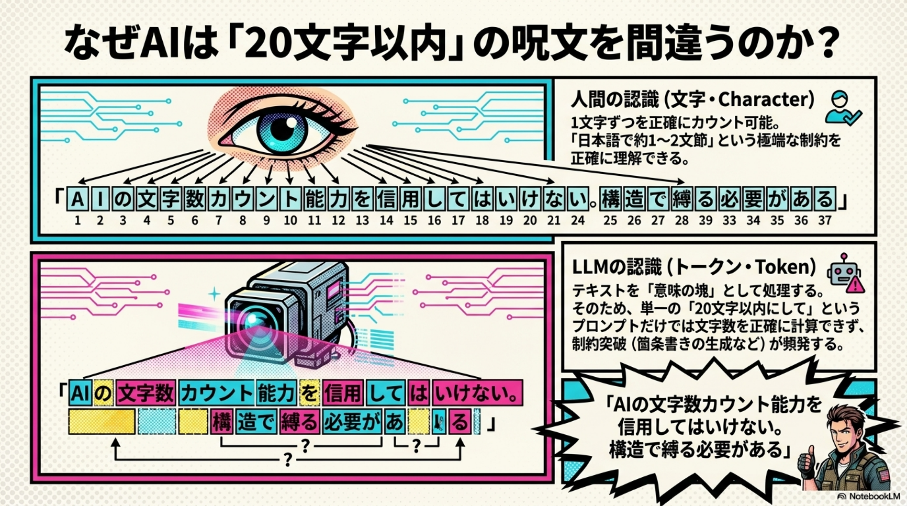
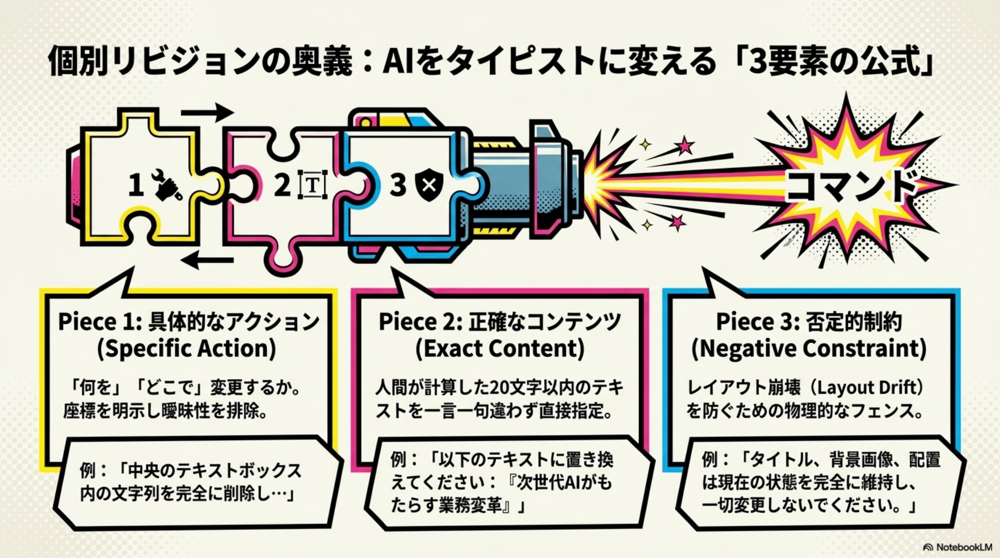

このLPで見られる内容
AIが得意な起草と、人間が担う最終編集を分けて、実務で使えるスライド制作フローとして整理しています。
1
20文字制限の考え方
Presenter Slidesを前提に、冗長化しやすいAIの出力をどう抑えるかを整理します。
2
画像は直接出せない問題
画像差し込みの制約を踏まえ、GoogleスライドやPowerPointを仕上げ工程として使う考え方をまとめています。
3
PPTXで仕上げる最終工程
NotebookLMで骨組みを作り、人間が配置・整形・ブランド調整で完成度を上げる流れを見える化します。
埋め込みメディア
動画と音声をこのページから直接確認できます。
セミナー動画
音声解説
行政基準を超えるAI提案の仕組みを音声で確認できます。
スライドの見どころ
Quest資料の中から、フロー理解に役立つページを抜粋表示しています。

導入と全体像

制約の整理

改善の方向性

運用上のポイント

個別リビジョン例

PPTX出力の活用
PDF資料の埋め込み表示
調査レポートとQuest資料の両方を、そのままページ内で閲覧できます。
NotebookLM スライド作成機能調査
NotebookLM Slide Quest
ダウンロード・参照ファイル
PDF・動画・音声を個別ファイルとしても開けます。